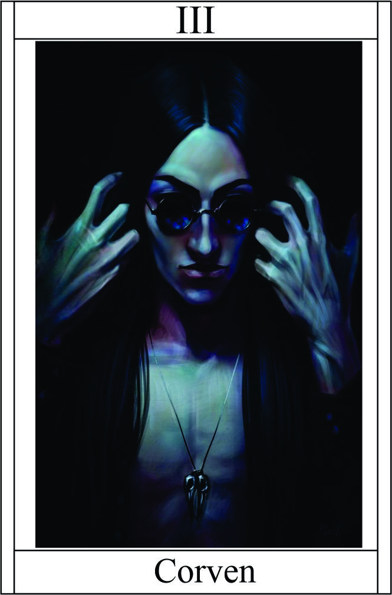

Espirito
Têndencia: Neutro Mal
Passiva - Olhos dos Corvos:
A passiva "Olhos dos Corvos" concede ao personagem a habilidade de se conectar com essas criaturas místicas e enigmáticas. Os corvos se tornam seus olhos e ouvidos, fornecendo informações valiosas e insights sobre o ambiente ao redor.
Legado 1 - Chamado dos Corvos
Ao ativar a habilidade "Chamado dos Corvos", o personagem emite um chamado especial que convoca um bando de corvos para ajudá-lo. Os corvos voam em torno do personagem, criando uma barreira de proteção e fornecendo uma visão ampliada do campo de batalha. Além disso, os corvos podem distrair os inimigos e desorientá-los.
Alvo receber -1 em acerto | Defesa 10HP | +1 Perceção
O personagem precisa estar em uma área aberta ou cercado por um mínimo de três corvos.
Legado 2 - Visão dos Corvos
Ao ativar a habilidade "Visão dos Corvos", o personagem pode enxergar através dos olhos dos corvos, obtendo uma visão aprimorada mesmo em condições de pouca luz. Essa habilidade permite ao personagem detectar inimigos ocultos, encontrar caminhos secretos e identificar detalhes sutis que seriam invisíveis para os outros.
+3 Perceção
Condição para ativar a habilidade:
O personagem precisa estar em um ambiente escuro ou com pouca visibilidade.
Legado 3 - Conjurar Enxame de Corvos:
Ao ativar a habilidade "Conjurar Enxame de Corvos", o personagem invoca um grande enxame de corvos que atacam os inimigos próximos. Os corvos causam dano contínuo aos alvos atingidos, além de causar distração e desorientação.
Ataque por Round Corvos: 5 | +1 acerto | Inimigo terá dificuldade de acerto -1 | +1 Furtividade
Restrição de uso:
O personagem precisa ter uma quantidade mínima de energia mágica acumulada.